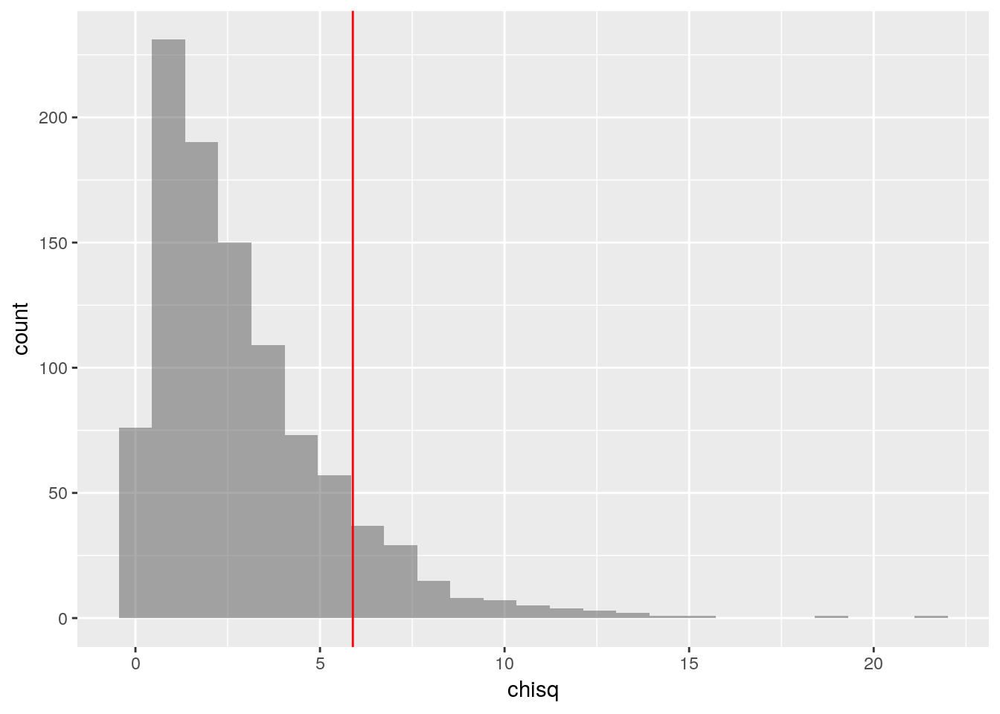

In the last post I complained that there is no way to apply a formula to rows of a data frame so that the formula will consume the rows as lists or vectors. Turns out I was wrong, and there is a very easy way to do it!
Not only that, but I was actually really close to it, and if I was just reading the relevant documentation bit more carefully…
As I wrote in that post, this works:
selections %>%
mutate(chisq = pmap_dbl(., ~sum((c(..1, ..2, ..3, ..4) -
expected)^2/expected))) %>%
head()I was suggesting that perhaps something like
pmap_dbl(selections, ~sum((.row - expected)^2/expected))would be nice to have. While experimenting, among other things I tries this:
pmap_dbl(selections, ~sum((... - expected)^2/expected))which of course does not work, and I am not sure why I thought it would. The correct way, of course, is
pmap_dbl(selections, ~sum((c(...) - expected)^2/expected))The ... is, in this case, equivalent to ..1, ..2, ..3, ..4.
Since I need c(..1, ..2, ..3, ..4), I have to use c(...).
The simulation again
Anyway, let’s do the whole simulation from the previous post again:
library(tidyverse)
library(mosaic)First enter the given information:
labels <- fct_inorder(c("White", "Black", "Hispanic", "Other"), ordered=TRUE)
percentages <- c(72, 7, 12, 9)
names(percentages) <- labels
observed <- c(205, 26, 25, 19)
names(observed) <- labelsCalculate the expected frequencies and the observed \(\chi^2\) score:
expected <- 275*percentages/100
observed_chi_square <- sum((observed - expected)^2/expected)
observed_chi_square## [1] 5.88961Repeatedly sample, with replacement, 275 pieces of paper from a bag representing the population, tally each sample, and record the frequencies in a data set:
bag <- rep(labels, percentages)
do(1000) * tally(sample(bag, 275, replace=TRUE)) -> selections
glimpse(selections)## Observations: 1,000
## Variables: 4
## $ White <int> 206, 190, 189, 196, 201, 190, 201, 203, 201, 195, 195, …
## $ Black <int> 14, 19, 17, 20, 19, 28, 23, 17, 24, 23, 17, 19, 17, 14,…
## $ Hispanic <int> 36, 35, 36, 35, 27, 27, 24, 30, 28, 20, 28, 28, 35, 33,…
## $ Other <int> 19, 31, 33, 24, 28, 30, 27, 25, 22, 37, 35, 42, 25, 26,…Add a new column to the data set, with the \(\chi^2\) scores of the simulated samples:
selections %>%
mutate(chisq = pmap_dbl(., ~sum((c(...) - expected)^2/expected))) ->
selections_with_chisqThis is what we have now:
head(selections_with_chisq)## White Black Hispanic Other chisq
## 1 206 14 36 19 3.3636364
## 2 190 19 35 31 2.0259740
## 3 189 17 36 33 3.6948052
## 4 196 20 35 24 0.1933622
## 5 201 19 27 28 1.5663781
## 6 190 28 27 30 6.5050505Plot the \(\chi^2\) scores of all the simulated samples, and mark the observed \(\chi^2\) on the plot with a vertical line.
gf_histogram(~chisq, data = selections_with_chisq) %>%
gf_vline(xintercept = observed_chi_square, color="red")
How many of the 1000 simulated samples had a \(\chi^2\) score greater than or equal to the observed \(\chi^2\) score?
count(~(chisq >= observed_chi_square), data = selections_with_chisq)## n_TRUE
## 132Possible simplification
I am pretty happy with this. The only thing that I think can still confuse R
beginners is the use of . as the first argument of pmap_dbl. I usually do
few examples of tidyverse pipelines at the beginning of the semester, and
usually one or two of those use this somewhere, but I don’t think most students
will remember those at this point. Since we do not actually need to preserve
the original columns (the only reason I preserved them was to make the data set
look just like a worksheet they filled in while figuring out the whole idea of
\(\chi^2\) scores), we can do this instead:
selections %>%
pmap_df(~list(chisq = sum((c(...) - expected)^2/expected))) -> chisquaresand then replace selections_with_chisq by chisquares when making the
histogram and calculating the p-value. I am not sure if this really is that
much simpler, with the list, and pmap_df not being one of the basic dplyr
verbs we learned at the beginning of the semester…